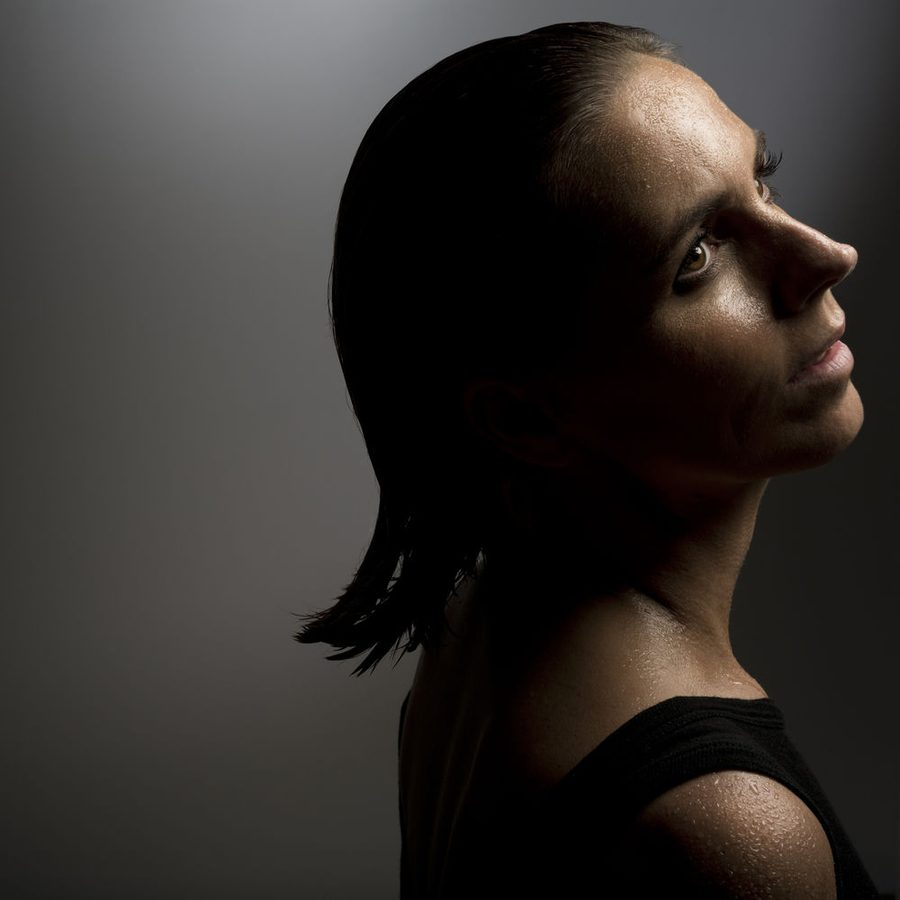

Anja Schneider’s Dubmission: “I’m making progressive music for the first time in my life”


Anja Schneider’s Dubmission: “I’m making progressive music for the first time in my life”
Anja Schneider’s recent Dubmission EP represents a rather different direction for the Berlin stalwart; not to mention, a genuine reflection of where underground dance itself is moving in 2014. It was inspired by her time at the BPM Festival in Mexico earlier this year, where Schneider noticed how many shimmering melodies where seeping their way into those typically stripped-back, pulsing grooves. As such, ‘Dubmission’ is a sublimely beautiful tune that makes no bones about the fact that it channels the enigma of early trance and progressive house.
As a whole, things are looking rock-solid for Schneider in 2014. Her Mobilee Records stable is going strong as it approaches its 10th anniversary, with an impressive roster of artists working alongside her. And after establishing such a strong annual presence as part of the Off-Sonar parties, they’re finally establishing their own Ibiza residency. Albeit, one that is decidedly removed from the VIP culture of the Island, in the form of a free daytime party every fortnight at the Santos poolside resort.
Schneider admits that striking out with an offering like ‘Dubmission’ felt like a risk, to a degree; particularly in an underground mecca like Berlin, where the melodic delights of progressive (and most certainly trance) have been out if the picture for so long.
As she told Data Transmission though, it’s a track that channels her own Berlin party past. Named after a weekly party in the early 90s at Berlin’s iconic E-Werks club, which featured the likes of Kid Paul and Paul van Dyk as residents, it was a time when these enigmatic progressive sounds where connecting with the city’s clubbers. As dance music itself comes full circle again, what better time to revisit her past? And the enigmatic Dubmission is something quite special indeed.
Data Transmission visited Schneider in her Mobilee offices in the Berlin district of Mitte, shortly before the launch of her Ibiza residency this month, and we began by asking her about the impending 10th anniversary of her label.
It’s definitely a milestone for any independent label.
Of course, and in the first year or the first half a year when you open up the label, you’re the hottest kid on the block. And then of course after a while people do not care so much, and it’s hard to always keep the interest there in your label, because things are always changing so quickly. So at least we are super happy that our brand is still so strong, alongside other labels like Get Physical, Poker Flat, all these labels that have started in Berlin. So it’s all good.
Plus, you had all this ‘minimal’ hype in the early days, and we were seen as this ‘minimal label’, and it was never our intention to be minimal. But this was a good wave to ride upon.
How did you evolve once that craze came and went, if you didn’t really choose to be attached to it?
We just let it go. Because really, Mobilee is not one specific sound. And I’m not the boss or the guru like at some of the other bigger labels, where there’s one person that everyone has to follow. And I have no problem at all if people on the label like Pan-Pot or Sebo K are going to be bigger than me. This would be wonderful, this is my dream. It’s not something that makes me nervous; I’m not insisting that everybody play what I like. Everything is possible. Of course I have to like the music that is being released on the label, but everyone can develop and evolve in their own specific way. I’m not bigger than the brand, and this is probably the success of Mobilee. So I was not scared when this minimal hype died down. To begin with, I knew we always had Sebo K on the label, who was always more of a house producer in the first place.
I’d always thought of Mobilee as more house focused than straight up techno or minimal.
I’d always describe it as music that you can dance to. It doesn’t matter if it’s the music at the afterparty, the preparty, or at peaktime... anything is possible.
When you guys began, it was after all the changes happening in terms of digital distribution, when you could expect to make a lot less from a record label than 20 years ago.
Yes of course. Though even in our first year, we had records that were still selling in numbers that we’d only ever dream about these days [laughs]. It’s never gonna happen like that again, and it doesn’t matter how good the track is or not. But they were different times. So in the face of all this, I’m really happy that we’re still able to do albums, and still able to feature our artists.
How do you respond to these changes from a business perspective?
The biggest change that we did, and that was already around six or seven years ago, is that we started our own booking agency. I think these days to run a label, you definitely need to have your own booking agency. Which is also because you’re investing in your artists. The idea with Mobilee was always to find some new people, to work with them, to take them by the hand and travel a long way with them, to try to build them up. And this is only possible when you have a booking agency, which allows you to showcase them. This was the biggest change.
The other change was, I hate to say this, but we’re not doing every record on vinyl anymore. Because it can really be a pain in the ass, it can cost so much money, and especially with the young artists who we want to build up, it wouldn’t allow us to also do a video or a tour, and to build them up in those ways. Vinyl can be prohibitively expensive.
So Mobilee will finally have an Ibiza residency this year.
Yes, this is the first time that we will have an Ibiza residency. Of course we’ve had a lot of offers before from Ibiza, but it wasn’t for me, we never felt comfortable. Because at Mobilee, we’re not about being this whole VIP, superstar kind of brand… it was not feeling right. We’ve thrown some really successful parties in Barcelona, we had a really special atmosphere there, and we didn’t want to disturb this. We want to try to create that too in Ibiza. So it took a long time to be able to find somewhere where we were able to do this. We’re working with a venue where the entrance is free, and there no VIP tables, so it looks like we can maybe create this special feeling there.
I always viewed the vibe in Ibiza as so different to Barcelona, and even more so Berlin, where the focus is keeping things affordable, and not trying to squeeze money from you.
I often wonder how the people in Ibiza even tolerate this. I there last year two times, for two weeks with my son and my mother, and when I went out I was on the guestlist and didn’t even have to pay entrance. And even then, I barely found it affordable. I mean, the food and the drinks… In the 90s there was a status around having to buy a big car when you’re growing older, which you can drive through the city. Nowadays it’s all about having to go for five days to Ibiza, and to take as many photos as possible, and to put them on your Facebook because this means you’re a big player [laughs]. I feel really different about Ibiza. I don’t like this, because I’m still coming from this underground scene, and I hate this whole VIP table thing, where you pay 1000 euros for a bottle of vodka. I don’t like this. It’s a very commercial business nowadays. But of course there is still this very special feeling on the island… and I have the feeling we’ll be seeing some more of these free underground daytime parties. Guy Gerber for instance will be having his party on the beach for free this year, which will be quite interesting.
How did you manage to find the venue that fit in with he ethos of Mobilee?
We’d had some offers, and we’d visited the island to scout around. And last year when I was there myself and met with the current venue Santos, we had a really good feeling. So we said okay come on, let’s do it. With the other earlier offers there had always been promoters involved, but we wanted to work directly with the hotel itself. This is really important when it comes to issues like sound and security, it’s always good to avoid having someone in-between, so you can speak directly with the owners about what is possible, about how we work and who we are, what kind of people we want coming and so forth. The owner of Santos is someone who was involved with managing Privilege for years, so he knows exactly what’s going on in nightlife.
Another of the interesting things for you this year has been your new EP.
I’m making progressive sounds for the first time in my life [laughs].
I grew up myself listening to the likes of Sasha and Digweed, so it makes sense to me.
And that’s the same history where I came from, but of course I’d never used it as a DJ or producer. Trance and progressive just never had a presence in the Berlin underground scene. And then I went to the BPM Festival in Mexico this year, and I went to so many good beach parties, particularly Innervisions, and I really loved the sounds that we heard there. I was like, oh my god, this is really trance. And I found it really interesting that there are young producers all of a sudden using these sounds, and all the deep house guys are also now producing sounds that are basically trance. So I went back and went into the studio, and I felt compelled to draw on these trancey sounds myself. And they were sounds that I’d never dared to use before [laughs]. But I grew up with this sound, and I went to these parties. Dubmission was a party on Friday at the legendary E-Werks in the 90s. And it was the residency of Kid Paul, and also the residency of Paul van Dyk, and Ellen Alien too. Back then when it started it was more this kind of a trance party, and I’ve been there and I as a big fan of this [laughs]. Like you said for yourself, I grew up with these sounds. It was really trancey and progressive, and it was good.
It’s interesting to hear this sound in a city like Berlin, where the UK presence has just been so absent, this epic feeling is seeping into a lot of records now.
This big hype of Tale of Us… they’re trance! And Ten Walls, it’s completely trance.
When you sat down to make that record, did it come naturally, or did you feel you were really stepping outside of your comfort zone?
I was not sure. But I also for a long time had a fight with myself about it. I’m always working with someone in the studio, because I can’t produce by myself, though I always have the ideas and I’m of course in the studio there the whole time. This time I was working with Martin Eyerer, which is a good combination, and he has a fantastic studio. And I was worried that it wasn’t really ‘Anja Schneider’. And he said to me, if you’re not doing this, then you never make a mark. Risk something. And I liked it, and I was so full of these Mexico influences, that I said okay, I don’t give a shit, let's do it and not let the Berlin police control it [laughs].
So what’s planned for rest of year?
Well the summer is going to be quite busy of course. Actually I’m back in the studio with Martin, and I really wanted to do an album but I don’t feel right at the moment. I don’t have the time, I’m a mum of a 3-year old and during the week I’m constantly there. He’s going to kindergarten, but after 4 o’clock, I’m there to take care of him. And especially when you’re away on the weekends, you want to be there during the week. So at the moment I’m not finding the time to do it. I’m also more of a dancefloor person, and when I do an album I want to do something outside of the dancefloor. And I don’t feel it right now. I love the dancefloor [laughs]. So I'm going to do another EP, two tracks are finished already so I think October it will be out.
Aside from the Ibiza dates, it seems you like to stay close to Berlin too.
This is also nice, as I don’t like to tour quite so much anymore. I did this all my life, so I like to be home now. And I love Berlin. I don’t want to spend the entire season in Ibiza, because Berlin is so nice in the summer. There are so many nice parties, and its so interesting what’s going on with what all the young kids are doing. Underground parties in a park somewhere. And this is super interesting; I like to go there and get some vibes. And this is interesting because everyone is looking for something different from Berghain and Watergate, and there are so many other new parties. So it’s nice to be in Berlin during the summertime, and to get all of these feelings.
Anja Schneider plays Summer in the City on August 9 at London's Tobacco Dock before heading to Village Underground for the afterparty. She also plays Mobilee Pool Ibiza every second Monday at Hotel Santos until September 22. Her 'Dubmission' EP is out now on mobilee. Buy it here: http://www.beatport.com/release/dubmission/1294976
Words: Angus Thomas Patterson